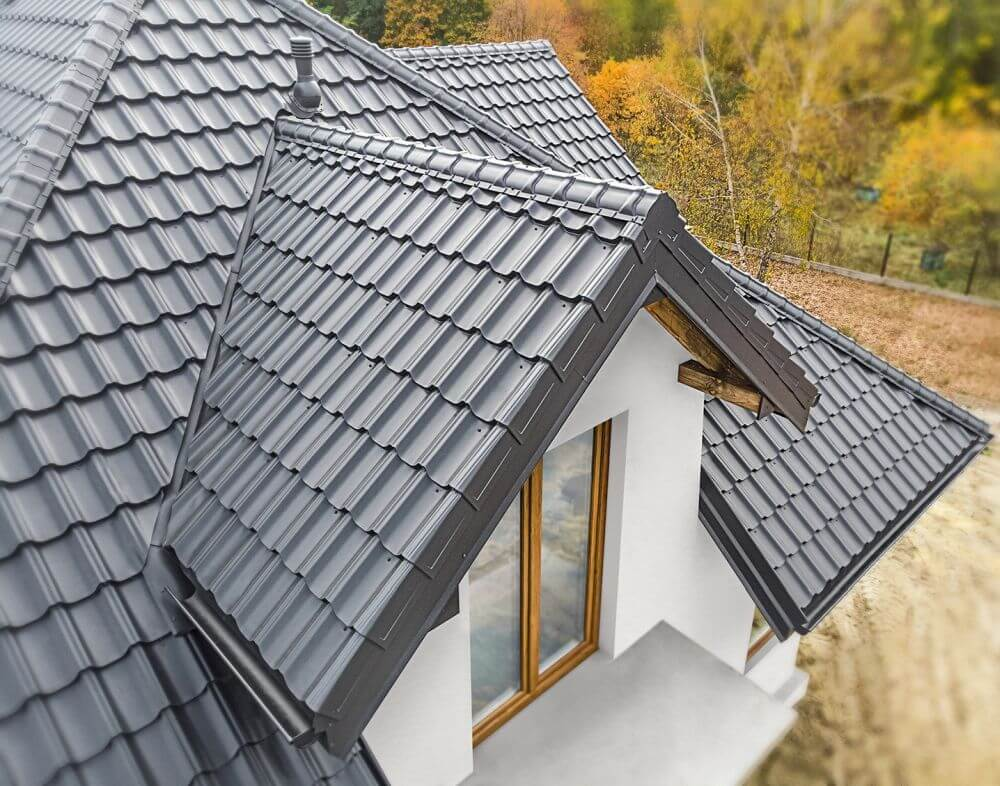
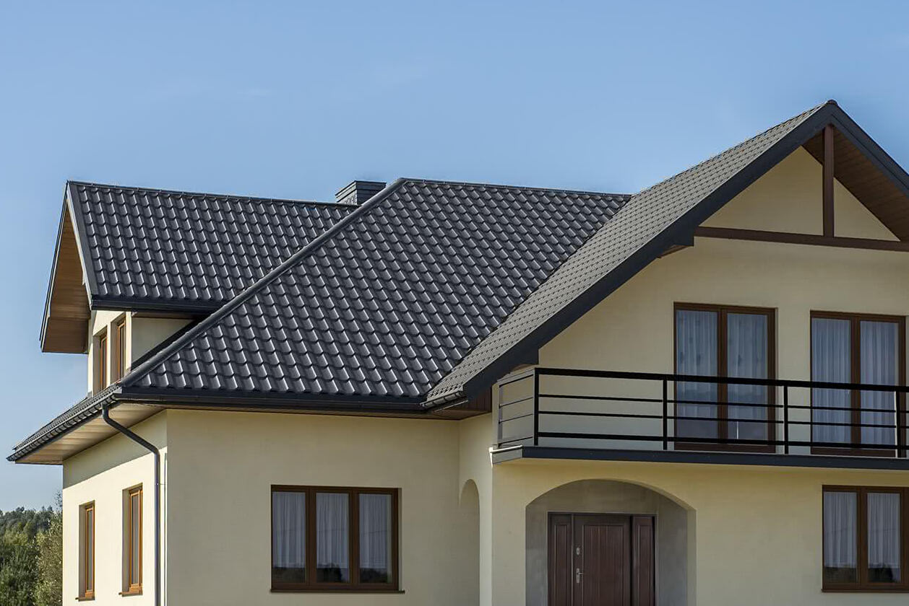
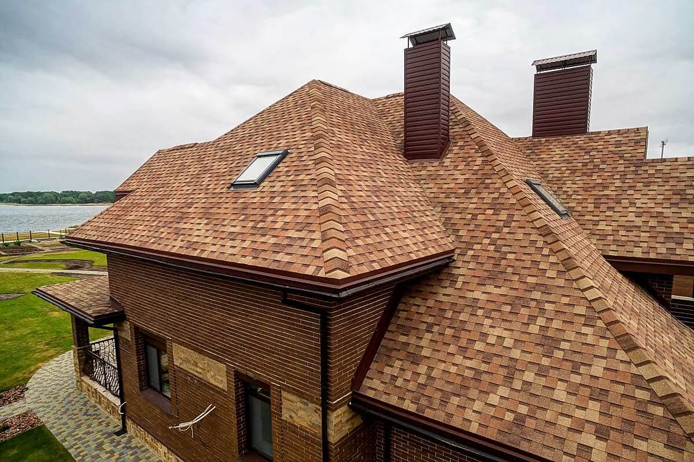
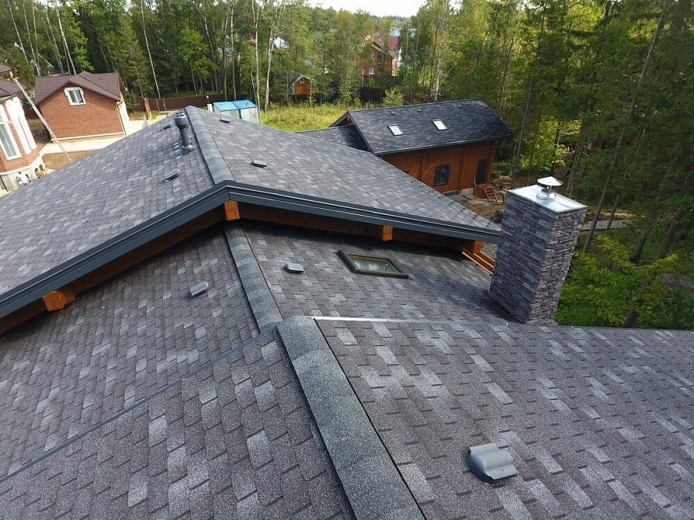

Кровельные работы в Воронеже
Создать надежный и прочный дом невозможно, если заранее не
спроектировать подходящий вариант крыши. Несмотря на кажущуюся
простоту решения такой задачи, она требует профессионального
грамотного подхода, так как качество кровли напрямую влияет на
продолжительность его срока эксплуатации.
Популярные виды кровли:
Металлочерепица. Один из самых популярных
кровельных материалов для крыши. Этот материал долговечен,
устойчив к негативным факторам внешней среды, в том числе к
температурным перепадам. Кровля из металлочерепицы в Воронеже
выглядит эстетично, не дает дополнительную нагрузку на дом и
относительно проста в монтаже.


Гибкая черепица. Легкое применение на крышах
сложной формы, красивый дизайн, отсутствие коррозии и конденсата,
бесшумность, долговечность


Этапы кровельных работ:
- 1. Постановка технического задания.
- 2. Обследование текущего состояния крыши, если требуется замена.
- 3. Замер всех необходимых параметров при возведении новой.
- 4. Составление проекта.
- 5. Согласование сметы.
- 6. Приобретение материалов - нашим специалистом или вами лично.
- 7. Монтаж кровли.
- 8. Сдача в эксплуатацию.
Цены на кровельные работы в Воронеже:
Полная стоимость кровельных работ определяется площадью крыши,
комбинацией расходных материалов и количеством необходимых работ.
Необходим выезд мастера